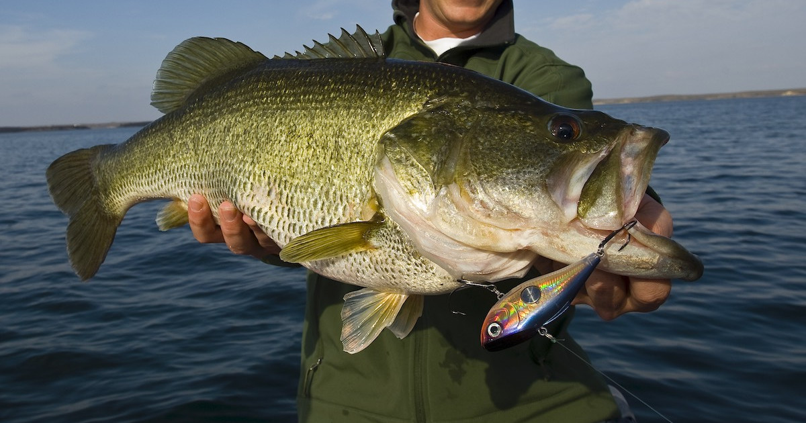
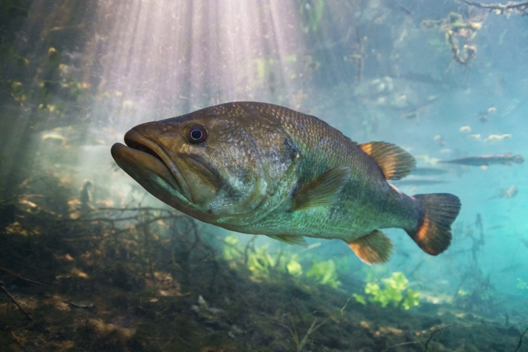
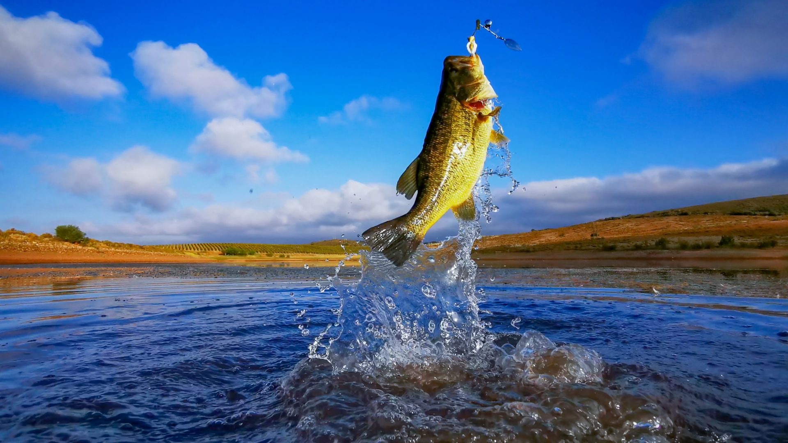

Facts about BASS Fishing
- The Most Popular Freshwater Sport: Bass fishing is one of the most popular recreational activities in the U.S., with millions of anglers targeting species like largemouth, smallmouth, and spotted bass.
- Largemouth Bass Are Opportunistic Eaters: These fish will eat almost anything they can fit in their mouths, from insects and frogs to smaller fish and even baby turtles!
- Catch and Release Is Common: Many bass anglers practice catch-and-release fishing to ensure the conservation of the species and allow others to enjoy the sport.
- Bass Are Temperature-Sensitive: Bass are most active in warmer waters, making spring and summer prime fishing seasons. However, they can still be caught during colder months with the right techniques.
- Record Largemouth Bass: The world record largemouth bass weighed an astonishing 22 pounds, 4 ounces, and was caught in Georgia in 1932. A tie to this record was made in Japan in 2009.

- Bass Can "Hear" Through Their Lateral Line: Bass use their lateral line system to detect vibrations and movements in the water, which helps them locate prey even in murky conditions.
- They Are Nest Builders: During spawning season, male bass create nests in shallow water to attract females and then guard the eggs and fry.
- Bass Tournaments Are Big Business: Competitive bass fishing tournaments can have massive payouts, sometimes reaching hundreds of thousands of dollars.
- Bass Love Cover: Whether it’s submerged logs, weeds, or rocky outcroppings, bass tend to hang around structures where they can hide and ambush prey.
- They Can Learn to Avoid Lures: Bass are intelligent enough to remember specific lure types and become more challenging to catch over time, especially in heavily fished waters.

- Night Fishing for Bass: Bass often feed aggressively at night during hot summer months, making night fishing a thrilling and productive activity.
- Variety of Lures: From topwater frogs and crankbaits to soft plastics and spinnerbaits, the variety of lures used for bass fishing is mind-boggling, offering endless customization for anglers.
- Bass Have a Keen Sense of Smell: Scents and attractants added to lures can sometimes make the difference between a bite and a strike.
- The Bass Fishing Hall of Fame: There's a Hall of Fame dedicated to bass fishing in Springfield, Missouri, celebrating the sport and its history.
- Bass Can Leap Out of the Water: When hooked, bass often perform acrobatic leaps to try to shake the lure, adding excitement to the catch!
